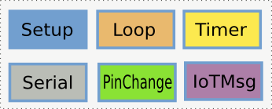

IoT Framework
clixx.io IoT-Framework is a software framework for C++ that makes it very easy to program IoT devices.
As a programming language, C++ is still going very strong. Most of the devices that people love to use today have software in which a very large amount of the code is written C++.
Our IoT Framework is a streamlined Event Framework for C++ that allows even those with a basic understanding of C++ to program their own IoT devices.
Our Framework talks directly to IoT Messaging Systems
Most Embedded programming systems require a few steps for you to interface your data and device to the messaging system. In contrast, clixx.io interfaces directly with a popular IoT messaging system MQTT that makes it really fast and easy to get your devices talking IoT. In many cases, you can program for IoT in less than 50 lines of code - Just see the example shown below. For more information on MQTT, click MQTT Introduction and MQTT CLI
We even provide a power MQTT Router to make it easy to bridge devices like the Arduino to the Internet extremely easily.
More Events and Callbacks in our IoT Framework
The "Wiring" language (popularised by Arduino) was a brave step away from standard C/C++ and introduced
the Setup() and loop() constructs.
The clixx.io IoT-Framework extends this even further with callbacks for Timers, Serial Data, IoT Messages and hardware Pin Changes.
IoT Framework Example
The following example shows the same functionality of the above example only here the checking is done by timer callbacks which are non-blocking rather than using a blocking delay() call in the previous example:
/* Simple Application
*
* A trivial simple example of an clixx.io Application.
*
*/
#include <stdio.h>
#include "clixxIO.hpp"
class App : public clixxIOApp{
int loop(){
// loop handler - This runs repeatedly
if (getTemperature() > 24)
aircon.On();
else
aircon.Off();
delay(1000);
};
int setup(){
// Setup - register the loop event for continuously running.
printf("Program is running");
aircon = clixxIO_Motor('motor1');
addLoopEvent(&loop());
};
};
// -- Main program Section. Simply setup an App class and let it run
int main(){
App m;
return m.run();
}